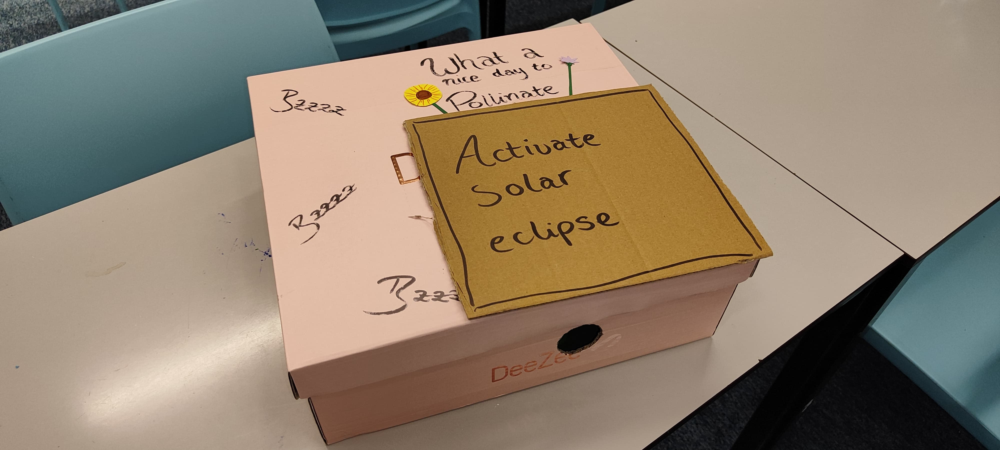
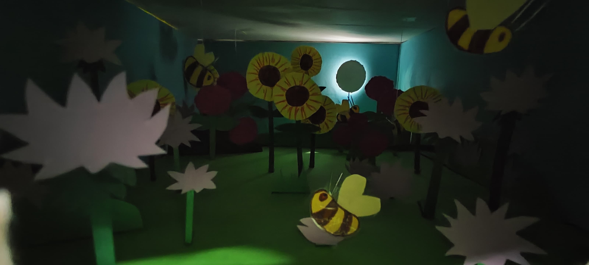
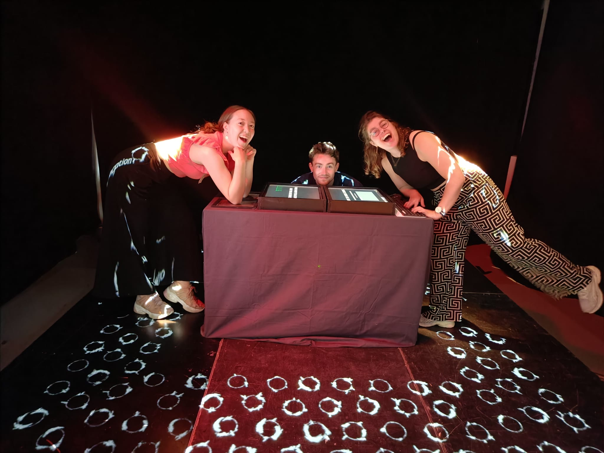

Projects
All the projects I worked on during my time in Media Technology MSc studies, in order of largest to smallest projects. (or chronological?)
Project Timeline
Highlighted Projects
As you can see, I did a lot of projects for this masters. However, projects that reached beyond my time at Media Technology and deserve some special attention are Testified Existence, Better Together, and my Graduation Project.
So please check them out!
Non-Human Cognition
The Non-Human Cognition course focuses on consciousness in all non-human creatures, ranging from animals to robots. With our group we created a poster about elephant communication. It was really fun except that the methods were shit, which we humbly "pointed out"" on our poster.

Sciences and Humanities
In the course Sciences and Humanities we were challenged to see the point of view from both the science and humanities side. Somehow this compelled me to write a song about it. If you really need to hear it, go ahead. It is a debate between two friends discussing Popper and Kuhn's views on science.
Research Fundamentals
The course Research Fundamentals taught us the basics of research and made us write a paper consisting of a topic that is about 7-papers big. A tough challenge, but I did it on one of my favourite animals to make it more bearable: octopi.
Alright show me the octopi!Strategies in Creative and Performing Arts
This course, Strategies in Creative and Performing Arts, challenges you to describe and think of a new strategy to perceive and research art. Below you can find my two papers.
Immersion PatternismDigital Drumset
For the course Creative Programming we learned to program in Processing (Java) and PlugData (PureData). At the end of the course we had to create a cool program in both Processing and PlugData. In Processing I made an interactive drumset and in PlugData I made a presentation trainer for shy people that tells you to either speak up or tone it down based on a set volume.
PianoSheetAI
The course Human Computer Interaction and Information Visualisation taught us to develop an interactive platform on our own and user test it. We went through the whole cycle of developing personas, user analyses, sketches, prototypes, scenarios, task analyses and usability specifications. Eventually we came up with PianoSheetAI: a pianosheet generator for musicians with a creative block.
A year later we further developed the web app for the course Computational Creativity, but this time with a focus on the co-creative aspect of gaining inspiration.
Playful & Creative Science
For the course Playful & Creative Science I had the honour of collaborating with my dear friend Annelies. We took an article about bee behaviour during solar eclipses and decided to demonstrate the results of the study in a creative and playful way: through a "peephole" box (Dutch: kijkdoos)!!
 


Escape room
In the course Hardware & Physical Computing, together with Annelies, Christina and Marlinde we built an escape room where you had to rob our teacher Maarten's house and escape. Solving arduino-based puzzles was the way to do this.
Etiam iaculis nulla ipsum, et pharetra libero rhoncus ut. Phasellus rutrum cursus velit, eget condimentum nunc blandit vel. In at pulvinar lectus. Morbi diam ante, vulputate et imperdiet eget, fermentum non dolor. Ut eleifend sagittis tincidunt. Sed viverra commodo mi, ac rhoncus justo. Duis neque ligula, elementum ut enim vel, posuere finibus justo. Vivamus facilisis maximus nibh quis pulvinar. Quisque hendrerit in ipsum id tellus facilisis fermentum. Proin mauris dui, at vestibulum sit amet, auctor bibendum neque.
Future Toys
For the course Meta Media we had one fulltime week
Etiam iaculis nulla ipsum, et pharetra libero rhoncus ut. Phasellus rutrum cursus velit, eget condimentum nunc blandit vel. In at pulvinar lectus. Morbi diam ante, vulputate et imperdiet eget, fermentum non dolor. Ut eleifend sagittis tincidunt. Sed viverra commodo mi, ac rhoncus justo. Duis neque ligula, elementum ut enim vel, posuere finibus justo. Vivamus facilisis maximus nibh quis pulvinar. Quisque hendrerit in ipsum id tellus facilisis fermentum. Proin mauris dui, at vestibulum sit amet, auctor bibendum neque.
Sound, Space and Interaction
For the course Meta Media we had one fulltime week
Etiam iaculis nulla ipsum, et pharetra libero rhoncus ut. Phasellus rutrum cursus velit, eget condimentum nunc blandit vel. In at pulvinar lectus. Morbi diam ante, vulputate et imperdiet eget, fermentum non dolor. Ut eleifend sagittis tincidunt. Sed viverra commodo mi, ac rhoncus justo. Duis neque ligula, elementum ut enim vel, posuere finibus justo. Vivamus facilisis maximus nibh quis pulvinar. Quisque hendrerit in ipsum id tellus facilisis fermentum. Proin mauris dui, at vestibulum sit amet, auctor bibendum neque.
Bees in a Box
The course Artificial Creatures We also had to create our personal pages on a shared website, if you are interested you can take a look at what me and my classmates did.
In September 2024, we were asked to perform with our robots during the Leiden Night of Discoveries for the Critters Exposition. With three big performances and small shows in between we amazed minds of kids and adults alike.
BTS of Better Together
Some descriptive text about the project here.


Robotics
For the course Robotics we learned to build robots, or more specifically, trying to make faulty robots work like they are not faulty at all. Long days at uni and many soda (cans) later we finished the course successfully. Though, what else would you expect with the teamname Kaasplankje.
Minecraft Platformer
Nam sapien ante, varius in pulvinar vitae, rhoncus id massa. Donec varius ex in mauris ornare, eget euismod urna egestas. Etiam lacinia tempor ipsum, sodales porttitor justo. Aliquam dolor quam, semper in tortor eu, volutpat efficitur quam. Fusce nec fermentum nisl. Aenean erat diam, tempus aliquet erat.
Bla.
Testified Existence
At the end of the first year we hosted and presented an installation for the large course Science to Experience.
The theme of the year was LIVING and we aimed to let visitors think about the difference between merely living and existing. Our teammate Linthe has made a really nice video about the whole experience, so I'd recommend to check that out to feel the vibes of the project.
BTS of Testified Existence
Some descriptive text about the project here.
Sneakpeek AI
For the course AI and Society, taught by Zane Kripke,
Bla.
Essentials for Data Science
For the course Meta Media we had one fulltime week
Bla.
Graduation Project
The final part of this master was in the theme of the thesis research. I decided to combine my sport ultimate frisbee with data science, and really it was just a perfect excuse to watch a lot of ultimate games.